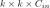
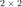
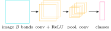

Construction
- Convolution layer:
 kernels of size
kernels of size 
, each slid over the input like a moving-window filter but with learned weights, producing feature maps; weight sharing makes the number of parameters independent of the image size. - Activation: ReLU.
- Pooling: max or average over

windows: downsampling, invariance to small shifts. - Head: fully connected layers + softmax (scene/patch classification) or an upsampling decoder with skip connections (U-Net: pixel-wise maps).
Trained end to end by backpropagation on large labelled sets; transfer learning reuses networks pre-trained on other images; data augmentation (rotations, flips) compensates for few labels.
Picture

Intuition
Instead of choosing texture measures and indices by hand, the network learns which local patterns matter, starting from edges and ending with fields, roofs and roads.
Pitfall
Deep networks need many labels and generalise poorly to other sensors, regions and seasons than those they were trained on (domain shift); a high test accuracy on patches from the training scene says little about a new country.